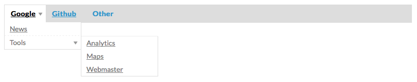

Create a HTML navigation menu and sub-menus from JSON with ease.
Check out the demo provided with this package.
This package can be easily installed using Bower.
$ bower install ez-menu
Manual install:
| Filename | Role |
|---|---|
| ez-menu.min.js | The main script to be included from within your HTML document. |
| ez-menu.min.css | This style sheet that defines the "look & feel" of the menu bar and sub-menus |
It's as simple as defining the target element #container using the jQuery selector and passing configuration data as JSON.
$(selector).EZMenu(settings, config);
Add the following JavaScript/CSS between the <head></head> tags of your HTML document.
<script src="http://ajax.googleapis.com/ajax/libs/jquery/1.8.3/jquery.min.js">
<script src="/path/to/ez-menu.min.js"></script>
$(document).ready(function() {
$('#container')
.EZMenu([
{ "name": "Menu Link 1", "url": "http://menu1.domain.com", "target": "_blank" },
{ "name": "Menu Link 2", "url": "http://menu2.domain.com", "target": "_blank" },
{ "name": "Menu List A", "options": [
{ "name": "Item 1A", "url": "http://item1A.domain.com" },
{ "name": "Item 2A", "url": "http://item2A.domain.com" },
{ "name": "Menu List B", "options": [
{ "name": "Item 1B", "url": "http://item1B.domain.com" },
{ "name": "Item 2B", "url": "http://item2B.domain.com",
"classname": "custom_link" }
]}
]}
]);
});
</script>
<link rel="stylesheet" type="text/css" href="ez-menu.min.css">
The following settings can be passed to the plug-in main function as JSON
| Option | Description | Default Value |
|---|---|---|
| showEasing | animation to be used when opening sub-menus content | linear |
| hideEasing | animation to be used when opening sub-menus content | linear |
| showSpeed | speed of the sub-menu animation in milliseconds | 300 |
| hideSpeed | speed of the sub-menu animation in milliseconds | 300 |
| click2open | open submenus on clickable event (default hover) | false |
| responsive | enabled responsive layout on supported mobile devices | false |
Click here for more information about the available jQuery UI Easing effects.
This can be easily achieved using optional classname in the menu JSON configuration. The following code corresponds to the example provided above.
$('a.custom_link').on('click', function(event) {
event.preventDefault();
// Do something
});
In order to support older web browsers, specifically Internet Explorer 7, this package requires jQuery 1.8.3. Furthermore, jQuery has recently dropped support for IE8 in version 2, so if there is no compelling reason to support these two web browsers it is recommended that you upgrade to the latest version of jQuery. If you still need to support IE8 please upgrade to jQuery 1.9+.
This package has been preconfigured to support QUnit headless testing using Travis-CI. If you plan on using another integration tool you will have to create a custom project that combines the use of QUnit and PhantomJS plugins. You can manually run these tests in your web browser by clicking here.
I have included with this package a packed version (3.4 kB) and developers version (unpacked 6.1 kB)
You can always find the latest updates within this projects repository.
This projects repository is currently hosted on Github
https://github.com/nuxy/EZ-Menu
For feedback, bug reports, or other comments, feel free to contact me at: devel at mbrooks dot info
This package is distributed in the hope that it will be useful, but without any warranty; without even the implied warranty of merchantability or fitness for a particular purpose.
EZ Menu is provided under the terms of the MIT license.
EZ Menu ©2012-2015 Marc S. Brooks